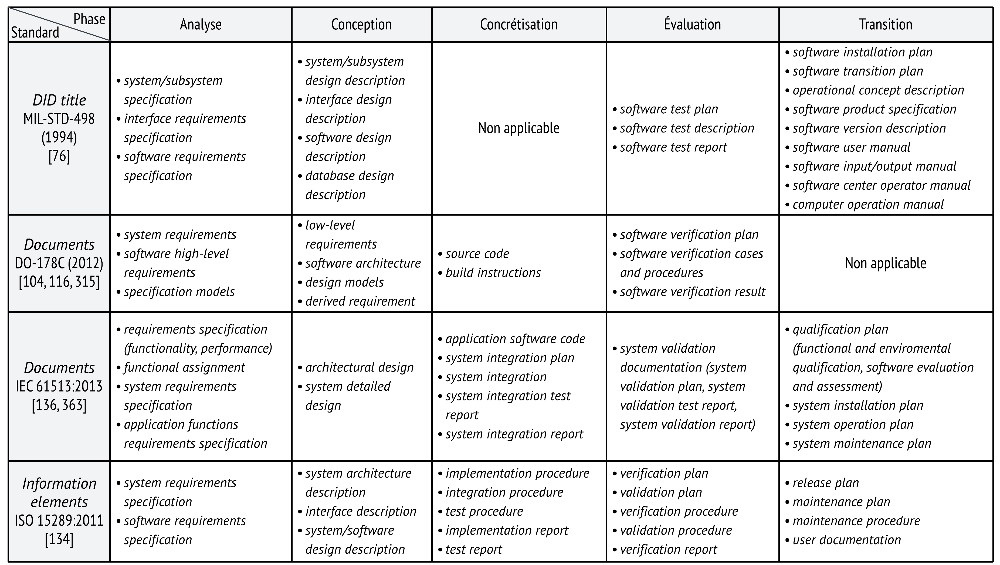
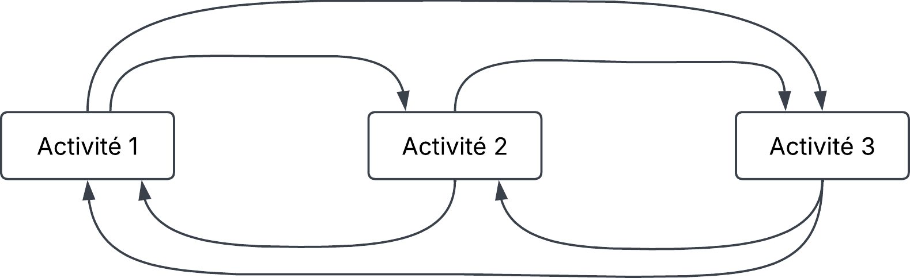
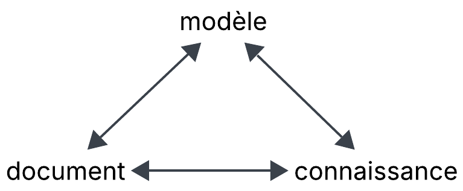
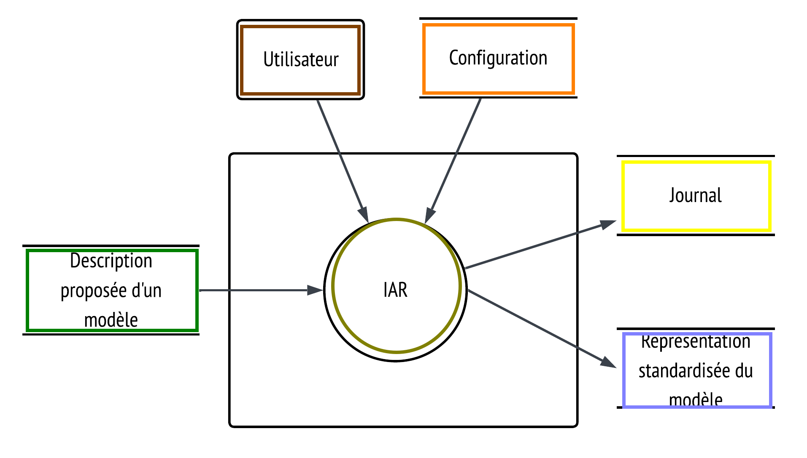
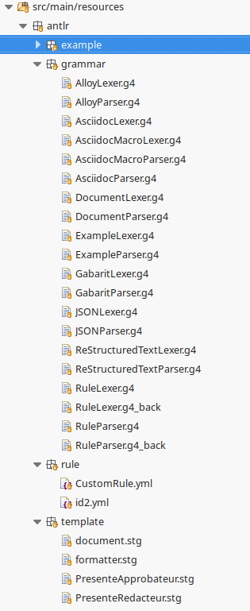
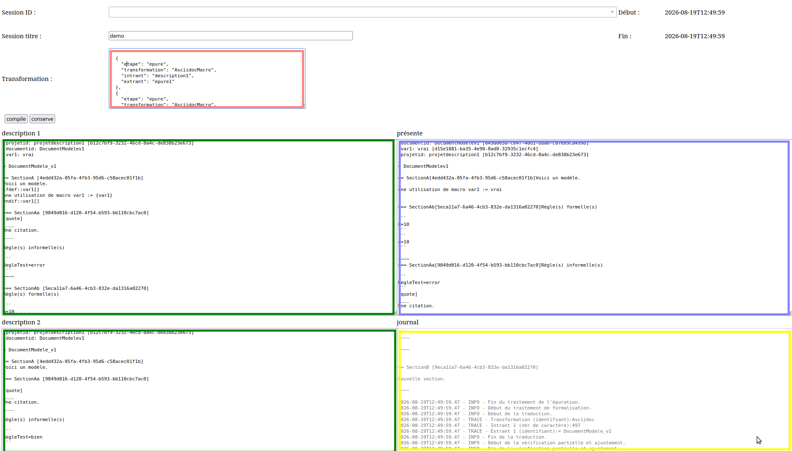

Le choix du sujet (pourquoi)
L’importance des documents
La mauvaise qualité des documents (le problème)
Récapitulatif théorique
Récapitulatif du problème
L’instrument développé (la solution)
Évaluation de la solution (la qualité)
Conclusion
D’abord, il y a :
le désir d’obtenir des logiciels de plus grande qualité;
les limites aux procédés de développement logiciel pour remplir cet objectif;
les problèmes de qualité subsistants dans les documents;
les répercussions engendrées par des documents de mauvaise qualité;
la taille imposante du sujet qu’est la documentation informatique.
Ainsi, le problème est devenu celui de la formalisation et de la compréhension des documents servant aux modèles.
La documentation logicielle a pour fonction première de transmettre, au moyen de documents, des connaissances organisées en modèles sur lesquels toute opérationnalisation d’un traitement informatique est fondée.
l’informatique ne se limite pas au code source;
les documents font partie du procédé de développement;
les documents exprimant des modèles sont essentiels au développement.
 |
Définitions en français :
|
Représentation de procédé sous la forme de diagramme :
 |
Complément d’information sur le terme artefact en langage mathématique :
Lors de ce procédé, l’informatique appliquée va :
chercher à définir, à s’approprier, à circonscrire et à caractériser les solutions acceptables pour un problème en particulier;
réaliser et établir une entité informatique qui solutionne ce problème.
Exemple : calcul de la quantité de carburant
Les documents comprennent :
besoin « Le système doit calculer la quantité de carburant nécessaire pour le restant du trajet. »;
descriptions du domaine avec différentes formules de physique concernant la gravité, la distance, la combustion, etc.;
exigences « Le calcul du carburant s’effectue comme X et les données prennent la forme d’Y. »;
Un modèle du problème avec les concepts et les formules;
Un modèle de solution avec une représentation des données et des règles de calcul du carburant et du trajet;
Un logiciel, c’est-à-dire le programme qui effectue le calcul.
Il y a une mauvaise compréhension des objectifs et de l’usage :
des langages formels;
des artefacts dont les documents font partie.
Cela conduit à :
une augmentation de l’usage de langage non formel;
une utilisation de mesures et de critères subjectifs;
une perception d’un manque de cohérence, de couverture et d’efficacité des artefacts produits;
potentiellement des répercussions négatives sur les modèles et les connaissances.
Ce qui est contenu dans les documents et les modèles a généralement un impact visible ou non immédiatement visible dans les logiciels produits.
 |
|
Pour des documents, des modèles ou des logiciels, il est possible de retrouver ces caractéristiques de qualité :
| type | caractéristique |
|---|---|
absolues | cohérence, couverture et efficacité |
relatives | complétude, efficience et adaptabilité |
universelles | réfutabilité et éthique |
|
Les systèmes logiques permettent à un modèle formel ou système formel:
de le rendre exécutable;
d’y détecter des incohérences.
Un langage formel comme le langage mathématique offrent :
un ensemble de symboles précis;
une syntaxe et une sémantique définies;
une maîtrise largement partagée sur la planète.
Plusieurs langages formels en informatique ont les inconvénients suivants :
de récupérer des symboles déjà existants;
d’avoir une syntaxe peu intuitive;
d’avoir une sémantique non définie;
d’avoir une maîtrise peu répandue.
La discipline qui traite ces langages est appelée traitement automatique des langues. Elle regroupe différentes techniques. Les grands modèles de langages sont un des résultats de ces techniques. Avec des inférences statistiques, elle offre des réponses satisfaisantes pour beaucoup d’utilisateurs.
Cependant, il y a des inconvénients :
elle ne surmonte pas les ambiguïtés des langages non formels;
la compréhension du fonctionnement interne de différentes techniques est très limitée;
la mise en place de certaines techniques nécessite énormément de ressources.
Quelques constats :
les documents exprimant des modèles sont nécessaires à la réalisation et l’établissement d’un logiciel pour modéliser/formaliser un problème et une solution;
un logiciel concrétise un système formel ou un modèle formel;
un système logique permet d’exécuter un système formel ou modèle formel et de trouver des incohérences;
des documents erronés conduisent à des modèles erronés et des modèles erronés conduisent à des logiciels erronés.
Sommairement les attentes de la solution devraient :
améliorer la compréhension des documents servant aux modèles;
rendre le travail avec les modèles plus efficients;
être utilisable, peu importe l’endroit, les gens ou les procédés.
Sommairement le besoin de la solution doit permettre de manipuler, d’adapter, de réutiliser et d’évaluer les modèles exprimés à travers des documents. Cela permettra d’obtenir des documents, des modèles et des logiciels de meilleure qualité.
Sommairement, il permet :
de manipuler, d’adapter, de réutiliser et d’évaluer les modèles exprimés à travers des documents;
de faciliter l’usage de langage formel;
d’objectiver la qualité.
Deux groupes d’exigences :
sur l’exploitation des modèles;
sur l’exploitation des métamodèles.
descriptions formelles exprimant des métamodèles ainsi que des règles (orange);
documents définissant un modèle ou des changements à un modèle (vert);
applique des transformations pour obtenir un modèle formel respectant un système logique (or);
documents produits à partir d’un modèle et selon des règles (bleu).
 |
|  |
|  |
Il y a :
la vérification du respect des exigences avec des cas de tests;
la validation des attentes envisagées avec des expérimentations.
il y a 5 cas de tests qui tentent de couvrir l’ensemble des 15 premières exigences;
ces cas de tests sont implémentés puis exécutés;
l’exécution permet de trouver des incohérences, de connaître l’efficacité et la couverture des exigences par l’implémentation.
consiste en l’ébauche d’un protocole expérimental;
vise à valider les critères de qualité que sont : la complétude, l’efficience et l’adaptabilité;
il s’agit d’une prochaine étape à ce travail.
Cet instrument d’aide à la rédaction contribue à :
donner un instrument pour contrôler les documents ;
se familiariser avec le concept de modèle, incluant les langages formels et les règles ;
se réapproprier la création de certains modèles, comme des grammaires et des métamodèles ;
évaluer la façon et l’impact de mettre en place de bonnes pratiques.
Cependant, la forme actuelle (preuve de concept) limite la validation possible de cette solution.